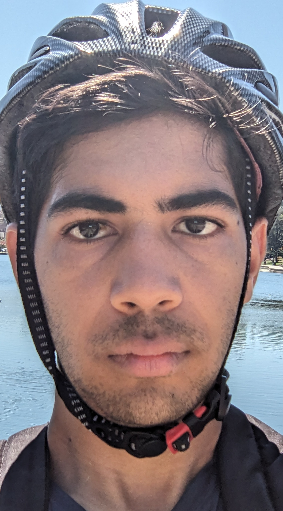
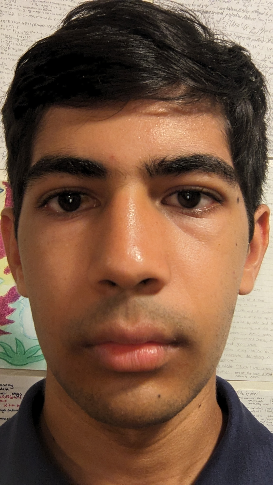

Part 1: Selfie: The Wrong Way vs. The Right Way
Here's a selection of photos from across Berkeley and Oakland.
Image 1 - Living Room
Image 2 - Shattuck Avenue

Image 3 - Lake Merrit
Image 4 - My Room
Image 5 - Vine Street
Here's a sequence of images with a consistent background.
